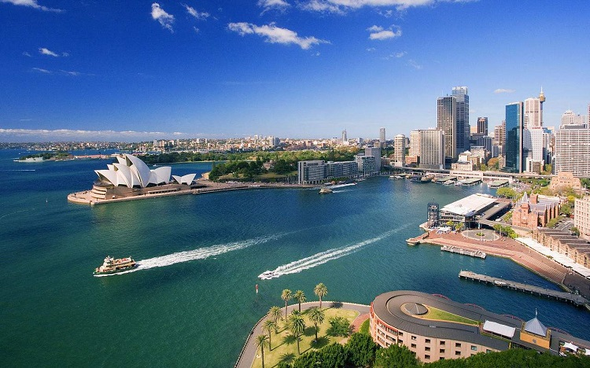

介绍
#地理位置和基本情况#
悉尼（Sydney），澳大利亚第一大城市及新南威尔士州首府，位于澳大利亚的东南沿岸，以著名的悉尼歌剧院而享誉世界，是澳大利亚的经济、文化、政治、航运和旅游中心，世界著名的国际大都市。

图：悉尼风光
悉尼是澳大利亚最大的城市，也是南半球社会最富裕，经济最发达的城市，坐落在新南威尔士州的东海岸地区，亦超越新加坡成为世界第七大城市。悉尼拥有傲视全球的风景线，被誉为“全球最美丽的城市”之一，由于这里拥有宜人的气候、洁净的环境、清新的空气、高水准的生活，悉尼曾多次被联合国人居署评为全球最宜居的城市之一，已连续多年占据全球宜居城市排行前十名。
悉尼同时也是全世界拥有最高生活水准的城市之一，多年来连续占据全世界生活水准最高的城市排行前十名。悉尼还是全球物价最昂贵的城市之一，连续多年被评为全球最昂贵城市排行前十名。
#宗教#
大约67%的悉尼市民形容自己为基督徒，最普遍的教派为天主教徒和英国国教徒。大约9%的人口并非信奉基督教，最普遍的是佛教。大约有12%没有宗教信仰。
#特色#
悉尼的中央商业区从首个欧洲殖民地──悉尼湾向南面延伸约2公里（1.25英里）。摩天大楼林立，历史性的砂岩建筑，如悉尼市政厅和维多利亚女皇大厦，设有公园如温拿公园（Wynyard Park）和海德公园（Hyde Park）点缀。
中央商业区东面接壤一连串的公园用地──海德公园、Domain公园、皇家植物公园及悉尼港的农场湾。中央商业区西临旅游胜地达令港。而中央站正是中央商业区的尽头。乔治街是悉尼中央商业区的南北大街。
在中央商业区南部，街道稍呈格状走向，井然有序；相反，在较古旧的中央商业区北部，街道则较杂乱，这反映出悉尼早期的犍子小道的特殊发展。
悉尼的街道多比澳大利亚其他城市的狭窄，也反映出其澳大利亚第一古城的特色。
#最佳出游时间#
10月至次年4月之间。悉尼地处温带，全年气候宜人，一年有超过340个晴天，冬天也不会太冷，任何季节去旅游都很不错。10月至次年4月空气湿润，气候适宜，是户外活动的最好时机。
时差
悉尼位于新南威尔士州（New South Wales）实行澳大利亚东部标准时间（AEST），夏令时开始（十月第一个星期天起）与北京时间三个小时时差；夏令时结束（四月第一个星期天起）与北京时间两个小时时差。
公众假期及节庆
#公众假期#
| 公众假期 | 日期 |
| 新年 | 1月1日-1月2日 |
| 澳洲国庆日 | 1月26日 |
| 耶稣受难日 | 4月14日 |
| 复活节 | 4月15日-4月17日 |
| 澳纽军团日（ANZAC Day） | 4月25日 |
| 英女皇寿辰 | 6月12日 |
| 劳动节 | 10月2日 |
| 圣诞节（Christmas Day） | 12月25日 |
| 节礼日（Boxing Day） | 12月26日 |
#悉尼同性恋狂欢节#
日期：每年年三月的第一个星期六
悉尼同性恋狂欢节游行起源于1978年，当时是为了纪念1968年纽约市同性恋者为争取合法化与社会认同，要求政府为之认同而做的斗争,他们结伴上街游行，遭到了当局的禁令和逮捕。
全国各地的同性恋者集结悉尼，除了准备这次大游行以外，还准备了包括电影、戏曲、体育、音乐、文学等一百多个项目，在短短的半个月时间里，就有几十万人参加和观看了这些活动，这就是被称作“悉尼同性恋狂欢艺术节”。

图：同性恋狂欢节
#悉尼春季郁金香花节#
日期：九月
在9月举行的郁金香节期间，有超过10万株郁金香参展。漫天的缤纷色彩将瞬间将你包围。此外，郁金香节现场还会有许多娱乐活动，包括儿童彩绘、现场表演等等，非常适合带上宝宝、家人一起前往。
#圣诞节#
日期：12月25日
又称耶诞节，译名为“基督弥撒”，西方传统节日，多数教派定在每年12月25日。弥撒是教会的一种礼拜仪式。圣诞节是一个宗教节，因为把它当作耶稣的诞辰来庆祝，故名“耶诞节”。
大部分的天主教教堂都会先在24日的平安夜，亦即12月25日凌晨举行子夜弥撒，而一些基督教会则会举行报佳音，然后在12月25日庆祝圣诞节;基督教的另一大分支——东正教的圣诞节庆则在每年的1月7日。
圣诞树、装礼物的袜子、圣诞老人的传说，圣诞节不仅仅是孩子们的最爱，更是所有人对过去一年的救赎，是人们最向往的日子。在澳大利亚，圣诞节的地位堪比中国的春节。
2017年悉尼圣诞庆典为期30天，将在全市各处的社区村落为大家史无前例地呈现澳大利亚的佳节风情和习俗，包括精彩的幻彩投影、亲子音乐会、颂歌合唱等表演。